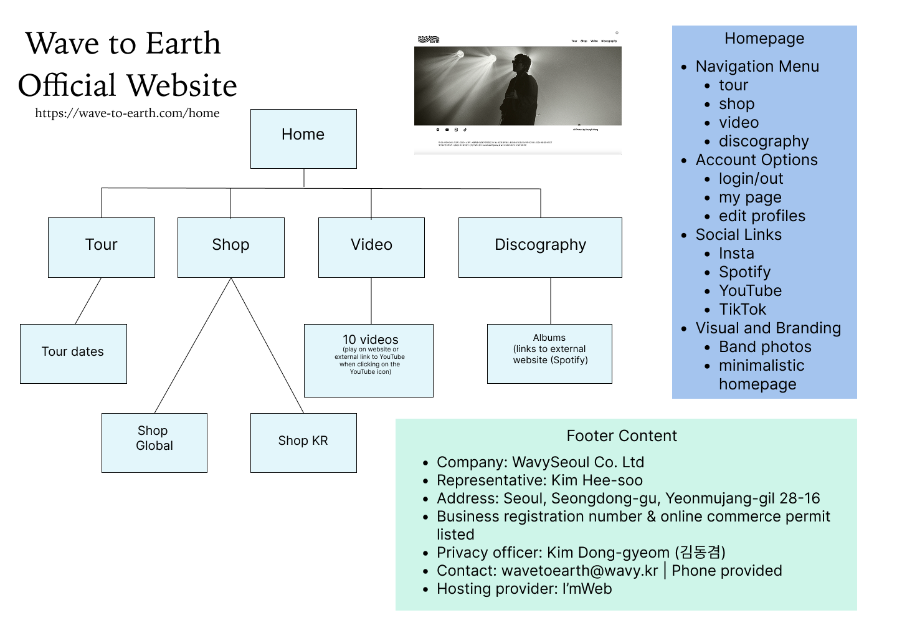

Indie music lovers — especially young, globally minded listeners who like dreamy lo-fi ambient indie pop/rock with authenticity; people who appreciate both the mood and the musical craft.
The site’s main function is to convert casual visitors into active fans by encouraging them to listen, buy merch, and follow along.
